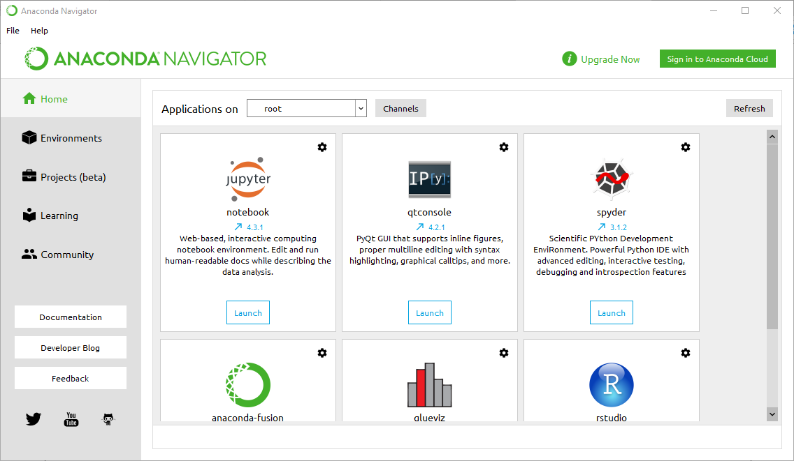

class: center, middle, inverse # Introduction à Python ### **UP Mathématiques** at École Supérieure PRivée d'Ingénierie et de Technologies (ESPRIT). ### 2 novembre 2023 .center[<img src="imgs/Signature-01.jpg" width=300>] <!-- Table of contents: Run pandoc with --toc option --> --- class: inverse # Objectifs généraux en premier Une partie essentielle de ce cours est de vous permettre de faire de la science par des expériences numériques et de développer des projets qui vous permettent d'étudier des systèmes complexes. Le but est d'améliorer ce que nous appelons la pensée algorithmique. *Algorithme* Un ensemble fini d'instructions non ambiguës qui, étant donné un ensemble de conditions initiales, peuvent être effectuées dans une séquence prescrite pour atteindre un certain but. --- class: inverse # Situation standard que nous rencontrons quotidiennement La situation standard que nous rencontrons presque tous les séances de cours: * Théorie + expérience + simulation est presque la norme dans la recherche et l'industrie. * Être capable de modéliser des systèmes complexes. Résoudre de vrais problèmes. * Accent la compréhension des principes fondamentaux et des lois dans les sciences. * Être capable de visualiser, présenter, discuter, interpréter et venir avec une analyse critique des résultats, et développer une attitude éthique saine pour son propre travail. * Améliorer le raisonnement sur la méthode scientifique. Une bonne présentation des résultats obtenus via de bons rapports scientifiques, aide à inclure tous les aspects ci-dessus. --- class: inverse # Langage Python [Python](http://www.python.org/) est un langage de programmation moderne de haut niveau, orienté objet et d'usage général. **Caractéristiques générales de Python** : * Langage simple: * facile à lire et à apprendre avec une syntaxe minimaliste. * Langage concis et expressif: * moins de lignes de code * moins de bugs * plus facile à maintenir. --- class: inverse **Détails techniques** : * Typé dynamiquement: * Pas besoin de définir le type des variables, les arguments ou le type des fonctions. * La gestion automatique de la mémoire: * Aucune nécessité d'allouer explicitement et désallouer la mémoire pour les variables et les tableaux de données. Aucun bug de fuite de mémoire. * Interprété: * Pas besoin de compiler le code. L'interpréteur Python lit et exécute le code python directement. --- class: inverse **Avantages** : * Le principal avantage est la facilité de programmation, qui minimise le temps nécessaire pour développer, déboguer et maintenir le code. * Langage bien conçu qui encourage les bonnes pratiques de programmation: * Modulaire et orientée objet, permet l'encapsulation et la réutilisation de code. Il en résulte souvent un code plus transparent, plus facile à améliorer et sans bug. * Documentation intégré avec le code. * De nombreuses bibliothèques standards, et de nombreux packages add-on. --- class: inverse # Installation d'un environnement Python scientifique ## Installation sur ordinateur #### Qu’est ce que Anaconda ? L’installation d’un environnement Python complet peut-être une vraie galère. Déjà, il faut télécharger Python et l’installer. Par la suite, télécharger un à un les packages dont on a besoin. Parfois, le nombre de ces librairies peut-être grand. Par ailleurs, il faut s’assurer de la compatibilité entre les versions des différentes packages qu’on a à télécharger. Bref, ce n’est pas amusant. --- class: inverse [Anaconda](https://www.anaconda.com/download/) est une distribution Python. A son installation, Anaconda installera Python ainsi qu'une multitude de packages (voir [liste de packages anaconda](https://docs.anaconda.com/anaconda/packages/pkg-docs#python-3-6)). Cela nous évite de nous ruer dans les problèmes d’incompatibilités entre les différents packages. Finalement, Anaconda propose un outil de gestion de packages appelé [conda](https://conda.io/docs/). Ce dernier permettra de mettre à jour et installer facilement les librairies dont on aura besoin pour nos développements. --- class: inverse #### Préparer la formation: téléchargement d’Anaconda Nous demandons à tous les étudiants de télécharger Anaconda. Pour cela, il faut télécharger un installeur à partir de <https://www.anaconda.com/download/>, correspondant à votre système d’exploitation (Windows, Mac OS X, Linux). Il faut choisir entre 32 bits ou 64 bits (pour la version *Python 3*) selon que votre système d’exploitation est 32 bits ou 64 bits. --- class: inverse .center[<p><em>Interface graphique du navigateur Anaconda sur Windows</em></p>] --- class: inverse *Notice.* Anaconda installe plusieurs exécutables pour développer en Python dans le répertoire *anaconda/bin*, sans toujours créer des raccourcis sur le bureau ou dans un menu. Nous nous occuperons au tout début de la formation de créer des raccourcis pour pouvoir lancer l'application web *Jupyter notebook*. Vous pouvez lancer le notebook depuis le navigateur Anaconda. --- class: inverse # Introduction: "Hello World!" C'est devenu une tradition que lorsque vous apprenez un nouveau langage de programmation, vous démarrez avec un programme permettant à l'ordinateur d'imprimer le message *"Hello World!"*. ```python In [1]: print("Hello World!") Hello World! ``` Félicitation! tout à l'heure vous avez fait votre ordinateur saluer le monde en anglais! La fonction `print()` est utilisée pour imprimer l’instruction entre les parenthèses. De plus, l'utilisation de guillemets simples `print('Hello World!')` affichera le même résultat. Le délimiteur de début et de fin doit être le même. ```python In [2]: print('Hello World!') Hello World! ``` --- class: inverse # Commentaires Au fur et à mesure que vos programmes deviennent plus grands et plus compliqués, ils deviennent plus difficiles à lire et à regarder un morceau de code et à comprendre ce qu'il fait ou pourquoi. Pour cette raison, il est conseillé d’ajouter des notes à vos programmes pour expliquer en langage naturel ce qu’il fait. Ces notes s'appellent des commentaires et commencent par le symbole `#`. Voyez ce qui se passe lorsque nous ajoutons un commentaire au code précédent: ```python In [3]: print('Hello World!') # Ceci est mon premier commentaire Hello World! ``` Rien ne change dans la sortie? Oui, et c’est très normal, l’interprète Python ignore cette ligne et ne renvoie rien. La raison en est que les commentaires sont écrits pour les humains, pour comprendre leurs codes, et non pour les machines. --- class: inverse # Nombres L'interpréteur Python agit comme une simple calculatrice: vous pouvez y taper une expression et l'interpréteur restituera la valeur. La syntaxe d'expression est simple: les opérateurs +, -, * et / fonctionnent comme dans la plupart des autres langages (par exemple, Pascal ou C); les parenthèses (`()`) peuvent être utilisées pour le regroupement. Par exemple: ```python In [4]: 5+3 Out[4]: 8 In [5]: 2 - 9 # les espaces sont optionnels Out[5]: -7 In [6]: 7 + 3 * 4 #la hiérarchie des opérations mathématique Out[6]: 19 In [7]: (7 + 3) * 4 # est-elle respectées? Out[7]: 40 # en python3 la division retourne toujours un nombre en virgule flottante In [8]: 20 / 3 Out[8]: 6.666666666666667 In [9]: 7 // 2 # une division entière Out[9]: 3 ``` --- class: inverse On peut noter l’existence de l’opérateur `%` (appelé opérateur modulo). Cet opérateur fournit le reste de la division entière d’un nombre par un autre. Par exemple : ```python In [10]: 7 % 2 # donne le reste de la division Out[10]: 1 In [11]: 6 % 2 Out[11]: 0 ``` Les exposants peuvent être calculés à l'aide de doubles astérisques `**`. ```python In [12]: 3**2 Out[12]: 9 ``` Les puissances de dix peuvent être calculées comme suit: ```python In [13]: 3 * 2e3 # vaut 3 * 2000 Out[13]: 6000.0 ``` --- class: inverse # Affectations (ou assignation) ## variables Dans presque tous les programmes Python que vous allez écrire, vous aurez des variables. Les variables agissent comme des espaces réservés pour les données. Ils peuvent aider à court terme, ainsi qu’à la logique, les variables pouvant changer, d’où leur nom. C’est beaucoup plus facile en Python car aucune déclaration de variables n’est requise. Les noms de variable (ou tout autre objet Python tel que fonction, classe, module, etc.) commencent par une lettre majuscule ou minuscule (A-Z ou a-z). Ils sont sensibles à la casse (`VAR1` et `var1` sont deux variables distinctes). Depuis Python, vous pouvez utiliser n’importe quel caractère Unicode, il est préférable d’ignorer les caractères ASCII (donc pas de caractères accentués). Si une variable est nécessaire, pensez à un nom et commencez à l'utiliser comme une variable, comme dans l'exemple ci-dessous: --- class: inverse Pour calculer l'aire d'un rectangle par exemple: `largeur` x `hauteur`: ```python In [15]: largeur = 25 In [16]: hauteur = 40 In [17]: largeur # essayer d'accéder à la valeur de la variable largeur Out[17]: 25 ``` on peut également utiliser la fonction `print()` pour afficher la valeur de la variable `largeur` ```python In [16]: print(largeur) 25 ``` Le produit de ces deux variables donne l'aire du rectangle: ```python In [17]: largeur * hauteur # donne l'aire du rectangle Out[17]: 1000 ``` --- class: inverse *Notice.* Notez ici que le signe égal (`=`) dans l'affectation ne doit pas être considéré comme **"est égal à"**. Il doit être **"lu"** ou interprété comme **"est définie par"**, ce qui signifie dans notre exemple: > La variable `largeur` est définie par la valeur 25 et la variable `hauteur` est définie par la valeur 40. *Warning.* Si une variable n'est pas *définie* (assignée à une valeur), son utilisation vous donnera une erreur: ```python In [18]: aire # essayer d'accéder à une variable non définie ----------------------------------------------------------------------- NameError Traceback (most recent call last) <ipython-input-18-1b03529c1ce5> in <module>() ----> 1 aire # essayer d'accéder à une variable non définie NameError: name 'aire' is not defined ``` --- class: inverse Laissez-nous résoudre ce problème informatique (ou **bug** tout simplement)!. En d'autres termes, assignons la variable `aire` à sa valeur. ```python In [19]: aire = largeur * hauteur ...: aire # et voila! Out[19]: 1000 ``` ## Noms de variables réservés (keywords) Certains noms de variables ne sont pas disponibles, ils sont réservés à python lui-même. Les mots-clés suivants (que vous pouvez afficher dans l'interpréteur avec la commande `help("keywords")`) sont réservés et ne peuvent pas être utilisés pour définir vos propres identifiants (variables, noms de fonctions, classes, etc.). --- class: inverse ```python In [20]: help("keywords") Here is a list of the Python keywords. Enter any keyword to get more help. False def if raise None del import return True elif in try and else is while as except lambda with assert finally nonlocal yield break for not class from or continue global pass # par exemple pour éviter d'écraser le nom réservé lambda In [22]: lambda_ = 630e-9 ...: lambda_ Out[22]: 6.3e-07 ```